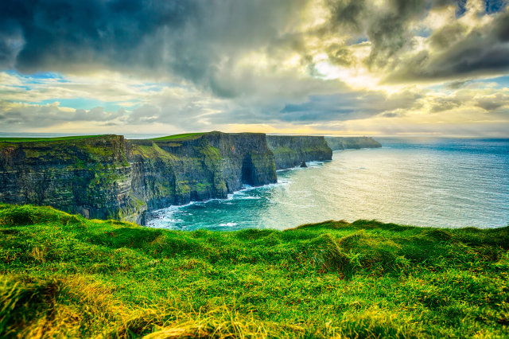

The 10 most beautiful places in the world


- 


1. Salar de Uyuni, Bolivia
The world's largest salt flats, spanning 4086 miles (10,582 sq. km), Salar de Uyuni is unlike anywhere else on earth. This awe-inspiring landscape is comprised of glistening white salt, and is completely flat creating the mesmerising reflections.
2. Moraine Lake, Canada
Moraine Lake may only only half the size of its nearby neighbour Lake Louise, but it's even more scenic. Situated in the beautiful Valley Of The Ten Peaks in Banff National Park, this glacier-fed lake turns the most intense and vivid shade of turquoise blue. The setting of the surrounding majestic mountain peaks makes the scene almost surreal.
3. Iguazu Falls, Argentina/Brazil border
One of the modern natural wonders of the world, this chain of mini waterfalls is one of the planet's most awe-inspiring sights. A visit is an awe-inspiring visceral experience, and the power and noise of the cascades – a chain of hundreds of waterfalls nearly 3km in extension – is something you won't forget. The falls lie split between Brazil and Argentina in a large expanse of national park, much of it rainforest teeming with unique flora and fauna.
4. Antelope Canyon, Arizona
Majestic sandstone creates the appearance of fire at Antelope Canyon.
5. Great Barrier Reef and Whitehaven beach, Australia
Diverse aquatic species include leatherback turtles and clown fish, the Great Barrier Reef needs no introduction. The world's largest coral reef system composed of over 2,900 individual reefs and 900 islands stretching for over 2,300 kilometres over an area of approximately 344,400 square kilometres (133,000 sq mi), the Great Barrier Reef can be seen from outer space and is the world's biggest single structure made by living organisms.
6. Cliffs of Moher, Ireland
These soaring cliffs in County Clare are one of Ireland's most famous tourist attractions. The maximum height of Cliffs is 214 m. This natural sanctuary is home to some 30,000 birds from 20 different species.
7. Algar de Benagil, Portugal
This natural grotto is a real gem on the Algarve coast, one of the most impressive sea caves in Europe. The amazing cave are only acessible by the sea, and, as you enter, the sun illuminates the water, creating amazing effects.
8. Plitvice Lakes National Park, Croatia
Plitvice is considered one of the most beautiful national parks in the world. This wonderful blend of oak forests, meadows and limestone rock formations are topped only by the incredibly vivid blue lakes, making it a magnet for tourists in Croatia.
9. Seljalandsfoss, Iceland
This incredible waterfall, along Iceland's southern coast, is fed by melting water from the famed glacier-capped Eyjafjallajokull volcano. This powerful waterfall cascades into a pretty meadow but is best known for the walking path that runs behind the curtain of water where visitors can enjoy a truly unique viewpoint.
10. Palawan Island, Philippines
Voted the world's most beautiful island more than once, Palawan is a slice of heaven, teeming with exotic wildlife, quaint fishing villages, and UNESCO World Heritage Sites. Visit the Calauit Game Preserve and Wildlife Sanctuary or explore the Japanese shipwrecks of Coron Island, regarded as one of the best dive sites in the world.